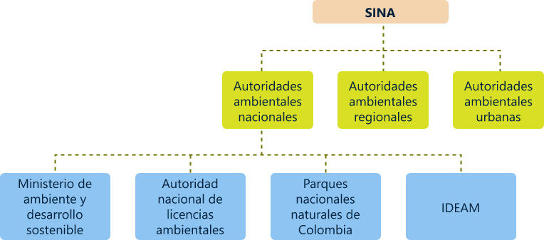
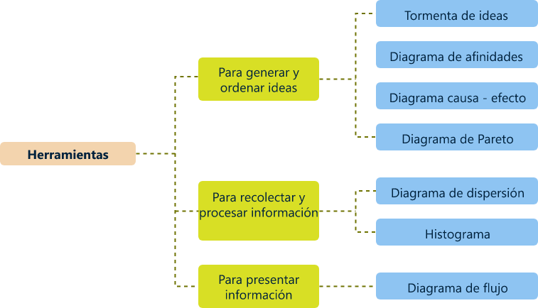
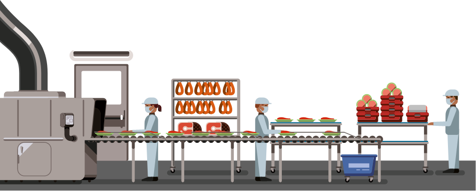

1. Tratados y convenios ambientales ratificados por Colombia
Así pues, Colombia ha firmado y se ha vinculado a diferentes tratados y convenios ambientales a nivel mundial, cada uno con objetivos y funciones establecidas. Estos tratados son acuerdos voluntarios u obligatorios por medio de los cuales los países participantes desarrollan propuestas en asuntos ambientales tan diversos como: cambio climático, biodiversidad y ecosistemas, desarrollo sostenible, protección de los océanos, gestión de residuos y sustancias químicas peligrosas, entre otros; con un propósito principal centrado en proteger el medio ambiente y la salud de las personas de los efectos negativos que pueden provocar las sustancias químicas, los contaminantes, el tráfico de especies, el vertimiento de residuos al mar, entre otros.
Es así como a continuación se presenta una breve descripción de cada una de estas organizaciones con el fin de identificar los tratados a los cuales Colombia se encuentra inscrito y sus disposiciones:
1.1 Convenio de Diversidad Biológica o Convention on Biological Diversity
El Convenio sobre la Diversidad Biológica (CDB) es un tratado internacional jurídicamente vinculante con tres objetivos principales: la conservación de la diversidad biológica, la utilización sostenible de sus componentes y la participación justa y equitativa en los beneficios que se deriven de la utilización de los recursos genéticos. Su objetivo general es promover medidas que conduzcan a un futuro sostenible y la conservación de la diversidad biológica como interés común de toda la humanidad.
“Este acuerdo cubre la diversidad biológica en todos los niveles: ecosistemas, especies y recursos genéticos. Cuenta con la Secretaría del Convenio sobre la Diversidad Biológica (SCDB), la cual tiene su sede en Montreal, Canadá y su principal función es ayudar a los Gobiernos a aplicar el CDB y sus programas de trabajo, organizar reuniones, redactar borradores de documentos, coordinar la labor del Convenio con la de otras organizaciones internacionales y recopilar, así como difundir información” (Secretaría del Convenio sobre la Diversidad Biológica, 2020).
A continuación se mencionan algunos de los datos clave que menciona la Secretaría del Convenio sobre la Diversidad Biológica (2020):
-
El Convenio sobre la Diversidad Biológica quedó listo para la firma el 5 de junio de 1992 en la Cumbre de la Tierra celebrada en Río de Janeiro, y entró en vigor el 29 de diciembre de 1993.
-
Hasta la fecha hay 193 Partes.
-
Los componentes de la diversidad biológica son todas las formas de vida que hay en la tierra, incluidos ecosistemas, animales, plantas, hongos, microorganismos y diversidad genética.
-
Con sus tres objetivos, el CDB es considerado a menudo como el principal instrumento internacional para el desarrollo sostenible.
-
Los ecosistemas, las especies y los recursos genéticos deberían utilizarse en beneficio del ser humano, pero de manera que no lleve a la pérdida de diversidad biológica.
-
Para conservar la diversidad biológica hacen falta cuantiosas inversiones, pero se obtendrán considerables beneficios ambientales, económicos y sociales.
-
El enfoque por ecosistemas es una estrategia integrada para gestionar recursos es el marco de acción del Convenio.
1.2 Convención de las Naciones Unidas de Lucha contra la Desertificación (UNCCD).
El Convenio sobre la Diversidad Biológica (CDB) es un tratado internacional jurídicamente vinculante con tres objetivos principales: la conservación de la diversidad biológica, la utilización sostenible de sus componentes y la participación justa y equitativa en los beneficios que se deriven de la utilización de los recursos genéticos. Su objetivo general es promover medidas que conduzcan a un futuro sostenible y la conservación de la diversidad biológica como interés común de toda la humanidad.
“Este acuerdo cubre la diversidad biológica en todos los niveles: ecosistemas, especies y recursos genéticos. Cuenta con la Secretaría del Convenio sobre la Diversidad Biológica (SCDB), la cual tiene su sede en Montreal, Canadá y su principal función es ayudar a los Gobiernos a aplicar el CDB y sus programas de trabajo, organizar reuniones, redactar borradores de documentos, coordinar la labor del Convenio con la de otras organizaciones internacionales y recopilar, así como difundir información” (Secretaría del Convenio sobre la Diversidad Biológica, 2020).
1.3 Foro de las Naciones Unidas Sobre Bosques (UNFF)
El Foro de las Naciones Unidas sobre Bosques (UNFF, por sus siglas en inglés), tiene por objetivo principal promover el manejo, la conservación y el desarrollo sostenible de todo tipo de bosques y fortalecer el compromiso político a largo plazo para este fin.
“Durante este foro, Colombia presentó sus contribuciones nacionales haciendo énfasis en la estrategia integral para la lucha contra la deforestación y programas en el marco de esta estrategia, como Visión Amazonía, Visión Pacífico, Bosques para la Paz, Cinturón Verde, entre otros” (Cancillería de Colombia , 2018).
1.4 Unión Internacional para la Protección de las Obtenciones Vegetales (UPOV)
La Unión Internacional para la Protección de las Obtenciones Vegetales (UPOV) es una organización intergubernamental con sede en Ginebra (Suiza) y se creó para lograr la Protección de las Obtenciones Vegetales. El Convenio se adoptó en París en 1961.
“La misión de la UPOV es proporcionar y fomentar un sistema eficaz para la protección de las variedades vegetales, con miras al desarrollo de nuevas variedades vegetales para beneficio de la sociedad” (UPOV, 2020).
1.5 Convenio de Viena para la Protección de la Capa de Ozono
El Convenio de Viena es el primer instrumento internacional que busca proteger la salud de los seres humanos y el medio ambiente, de los efectos adversos resultantes de la modificación de la capa de ozono atmosférica que rodea a la tierra.
“Este convenio se llevó a cabo el 24 de agosto de 2010, 196 países han firmado y ratificado la convención de Viena” (Minambiente , 2020).
Mediante este convenio cada una de las partes o países participantes se comprometen a cooperar con los medios que cada uno disponga, en la investigación e intercambio de información para mejorar la comprensión de los efectos de las actividades humanas sobre la capa de ozono y de los efectos de la modificación de ésta sobre la salud humana y el medio ambiente.
Por consiguiente, se comprometen a adoptar medidas adecuadas para controlar, limitar, reducir o prevenir las actividades humanas cuando se compruebe que tienen o pueden tener efectos adversos como resultado de la modificación probable de la capa de ozono.
1.6 Convenio Marco Cambio Climático
Este convenio se desarrolló con el fin de mitigar las actividades que afecten el cambio climático global protegiendo dos aspectos principales: la biodiversidad biológica, de acuerdo con el Convenio sobre la Diversidad Biológica (CNUDB) y la desertificación por medio del Convención de Lucha contra la Desertificación (UNCCD).
“Esto debido a que el cambio climático afecta a la biodiversidad y a la desertificación. Cuanto más intenso sea el cambio climático y mayor sea su alcance, mayor será la pérdida de especies vegetales y animales, y las tierras secas y semiáridas en todo el mundo perderán vegetación y se deteriorarán”. (Minambiente , 2020).
1.7 Protocolo de Kioto

Este protocolo compromete a los países industrializados a estabilizar las emisiones de gases de efecto invernadero.
El Protocolo de Kioto, establece metas vinculantes de reducción de las emisiones para 37 países industrializados y la Unión Europea, reconociendo que son los principales responsables de los elevados niveles de emisiones de Gases Efecto Invernadero (GEI) que hay actualmente en la atmósfera, y que son el resultado de quemar combustibles fósiles durante más de 150 años.
“Su principio central es el de la «responsabilidad común pero diferenciada»” (Minambiente , 2020).
1.8 Convenio de Basilea Sobre el Movimiento Transfronterizo de Desechos Peligrosos
El Convenio de Basilea se basa en el control de los movimientos transfronterizos de desechos peligrosos y su eliminación.
El convenio fue aprobado el 22 de marzo de 1989 por la Conferencia de Plenipotenciarios en Basilea (Suiza), se compone de 175 Partes y su objetivo principal se centra en proteger la salud de las personas y el medio ambiente frente a los efectos perjudiciales de los desechos peligrosos.
1.9 Convenio de Rotterdam
“El convenio de Rotterdam se enfoca en la gestión de productos químicos, entró en vigor en el 2004 y participan 73 miembros. Su función principal se centra en promover la responsabilidad compartida y los esfuerzos conjuntos de las Partes en la esfera del comercio internacional de ciertos productos químicos peligrosos a fin de proteger la salud humana y el medio ambiente frente a posibles daños y contribuir a su utilización ambientalmente racional, facilitando el intercambio de información acerca de sus características” (Secretaría del Convenio de Rotterdam, 2004).
1.10 Convenio de Estocolmo sobre Contaminantes Orgánicos Persistentes
El convenio de Estocolmo sobre Contaminantes Orgánicos Persistentes entró en vigor en el 2004 y tiene como objetivo proteger la salud humana y el medio ambiente de Contaminantes Orgánicos Persistentes (COP).
“En este convenio, cada una de las partes desarrollan y aplican medidas para eliminar o reducir la producción, utilización, importación, exportación y emisión al medio ambiente de COPs e incluye disposiciones en cuanto al acceso a la información, la sensibilización y formación del público y la participación en el desarrollo de planes de aplicación” (Minambiente , 2020).
1.11 Tratado de Cooperación Amazónica – TCA
El Tratado de Cooperación Amazónica (TCA), centra su atención en la protección y desarrollo armónico de la Amazonía y la incorporación de sus territorios a las respectivas economías nacionales, lo que es fundamental para el mantenimiento del equilibrio entre crecimiento económico y preservación del medio ambiente.
“Este tratado fue firmado y ratificado el 3 de julio de 1978 por los ocho países que comparten la Amazonía: Bolivia, Brasil, Colombia, Ecuador, Guyana, Perú, Surinam y Venezuela” (Cancillería de Colombia , 2018).
umado a cada uno de los tratados y convenios mencionados anteriormente, Colombia dispone de organizaciones públicas que se encargan de velar por el cuidado y conservación de los recursos naturales disponibles y el fortalecimiento de negocios y economías verdes y sostenibles.
2. Sistema Nacional Ambiental (SINA)
El SINA está integrado por el Ministerio del Medio Ambiente, las Corporaciones Autónomas Regionales (CAR), las Entidades Territoriales y los Institutos de Investigación adscritos y vinculados al Ministerio, y tiene como propósito asegurar la coordinación intersectorial en el ámbito público de las políticas, planes y programas en materia ambiental y de recursos naturales renovables.
En Colombia existen diferentes autoridades ambientales todas adscritas al SINA, las cuales se pueden agrupar en autoridades nacionales, regionales y urbanas, como se observa en la siguiente imagen:
2.1. Autoridades Ambientales Nacionales
A continuación se realiza una breve descripción de cada una de las entidades que regulan el cumplimiento de lo dispuesto y por supuesto, la creación de políticas e iniciativas que promuevan el cuidado del medio ambiente a nivel nacional.
2.1.1. Ministerio de Ambiente y Desarrollo Sostenible
De acuerdo con el Decreto 3570 de 2011 en su artículo 1º se decretaron los objetivos del Ministerio:
“El Ministerio de Ambiente y Desarrollo Sostenible es el rector de la gestión del ambiente y de los recursos naturales renovables, encargado de orientar y regular el ordenamiento ambiental del territorio y de definir las políticas y regulaciones a las que se sujetarán la recuperación, conservación, protección, ordenamiento, manejo, uso y aprovechamiento sostenible de los recursos naturales renovables y del ambiente de la nación, a fin de asegurar el desarrollo sostenible, sin perjuicio de las funciones asignadas a otros sectores.
El Ministerio Ambiente y Desarrollo Sostenible formulará, junto con el presidente de la República la política nacional ambiental y de recursos naturales renovables, de manera que se garantice el derecho de todas las personas a gozar de un medio ambiente sano y se proteja el patrimonio natural y la soberanía de la Nación.
Corresponde al Ministerio de Ambiente y Desarrollo Sostenible dirigir el Sistema Nacional Ambiental (SINA), organizado de conformidad con la Ley 99 de 1993, para asegurar la adopción y ejecución de las políticas, planes, programas y proyectos respectivos, en orden a garantizar el cumplimiento de los deberes y derechos del Estado y de los particulares en relación con el ambiente y el patrimonio natural de la Nación”
Así mismo, en el artículo 2º define las funciones que además de las funciones determinadas en la Constitución Política y en el artículo 59 de la Ley 489 de 1998 y en las demás leyes, el Ministerio de Ambiente y Desarrollo Sostenible debe cumplir.
Para conocer en detalle las 19 funciones asignadas al Ministerio consulte el material complementario: Decreto 3571 de 2011.
El Ministerio de Ambiente y Desarrollo Sostenible se encarga de definir la política Nacional Ambiental y promover la recuperación, conservación, protección, ordenamiento, manejo, uso y aprovechamiento de los recursos naturales renovables, a fin de asegurar el desarrollo sostenible y garantizar el derecho de todos los ciudadanos a gozar y heredar un ambiente sano.
A continuación se observa el Marco Institucional del Ministerio, el cual define y regula su funcionamiento:
Se crea el INDERENA con el objetivo de ordenar el manejo de los recursos naturales.
1968
Se expide el Código Nacional de los Recursos Naturales, con el fin de prevenir y controlar la contaminación.
1974
Declaración de Río que consagra el concepto de desarrollo sostenible y garantizar la supervivencia del planeta.
1992
Creación del Ministerio del Medio Ambiente mediante la Ley 99 de 1993.
1993
Decreto 1868 - Estructura del Ministerio.
1994
Decreto Ley 344 - Facultades especiales al presidente de la República.
1996
Decreto 1687 - Por la cual se fusionan unas dependencias en el Ministerio del Medio Ambiente.
1997
Ley 489 - Facultades extraordinarias al presidente de la República.
1998
Decreto 1124 - Por el cual se modifica la Estructura del Ministerio del Medio Ambiente.
1999
-
Decreto 527- Por la cual se Modifica la estructura del Ministerio y la Planta de Personal del Ministerio del Medio Ambiente.
-
Decretos 1977 y 1998 - Los cuales modifican Planta y Estructura y se regresa al Decreto 1124 de 1999 y Decreto 2687 de 1999.
2000
Ley 790 - Facultades extraordinarias al presidente de la República.
2002
-
Decreto Reglamentario 190 – Por el cual se reglamenta parcialmente la Ley 790 de 2002.
-
Decreto 216 de 2003 - Por el cual se determinan los objetivos, la estructura orgánica del Ministerio de Ambiente, Vivienda y Desarrollo Territorial y se dictan otras disposiciones.
-
Decreto 217 - Por el cual se suprime los empleos de la planta de personal del Ministerio de Medio Ambiente y se establece la planta de personal del Ministerio de Ambiente, Vivienda y Desarrollo Territorial y se dictan otras disposiciones.
2003
Decreto 3570 - Por el cual se modifican los objetivos y la estructura del Ministerio de Ambiente y Desarrollo Sostenible y se integra el Sector Administrativo de Ambiente y Desarrollo Sostenible. (Minambiente , 2020)
2011
2.1.2. Autoridad Nacional de Licencias Ambientales
Es una Unidad Administrativa Especial, creada mediante el Decreto 3573 del 2011, de orden nacional encargada de que los proyectos, obras o actividades sujetos de licenciamiento, permiso o trámite ambiental cumplan con la normativa, de tal manera que contribuyan al desarrollo sostenible.
“Con respecto al recurso hídrico, esta autoridad se ocupa de otorgar los permisos de concesión de aguas superficiales y subterráneas, de prospección y exploración de aguas subterráneas y de la autorización de construcción en zonas que ocupen el cauce de una corriente o depósito de agua, así como hacer seguimiento a todas las licencias otorgadas”. (ANLA, 2020)
Su objetivo principal es velar por el cumplimiento de la normativa ambiental por parte de los proyectos, obra o actividades que se encuentren sujetos de licenciamiento o trámites expedidos por la misma.
2.1.3. Parques Nacionales Naturales de Colombia
Es la Unidad Administrativa Especial encargada de la administración y manejo del Sistema de Parques Nacionales Naturales y la coordinación del Sistema Nacional de Áreas Protegidas.
Sus funciones son todas las relacionadas a la administración y cuidado de los parques naturales de nuestro país al igual que proponer estrategias en materia de zonas amortiguadoras de las áreas del Sistema de Parques Nacionales Naturales.
2.1.4. Instituto de Hidrología, Meteorología y Estudios Ambientales - IDEAM
El Instituto de Hidrología, Meteorología y Estudios Ambientales es una dependencia del Ministerio de Ambiente y Desarrollo Sostenible, la cual se encarga de la información científica, hidrológica, meteorológica y todo lo relacionado con el medio ambiente. Su misión consiste en ser apoyo técnico y científico al Sistema Nacional Ambiental, para la generación de conocimiento e información confiable y oportuna sobre el estado y las dinámicas de los recursos naturales y el medio ambiente en general, que facilite la definición de las políticas ambientales y toma de decisiones.
“El objetivo general del Instituto es el de fortalecer la capacidad tecnológica, científica, administrativa y financiera para producir la información hidrológica, meteorológica y ambiental de manera oportuna y con la calidad que requieran la ciudadanía, los sectores públicos y privados del país” (IDEAM , 2020)
Así mismo los objetivos misionales del IDEAM son:
-
Generar información y conocimiento sobre los recursos naturales renovables e indicadores ambientales.
-
Sistema de información ambiental.
-
Hacer monitoreo y seguimiento de los Recursos Naturales Renovables.
-
Servicios: Meteorología Aeronáutica, Redes hidrometeorológicas, Laboratorio físico químico ambiental, pronósticos y alertas. (IDEAM , 2020)
2.2. Autoridades Ambientales Regionales
“Las Corporaciones Autónomas Regionales (CAR) son entes corporativos de carácter público, creados por la ley, integrados por las entidades territoriales que por sus características constituyen geográficamente un mismo ecosistema o conforman una unidad geopolítica, biogeográfica o hidrogeográfica, dotados de autonomía administrativa y financiera, patrimonio propio y personería jurídica, encargados por la ley de administrar, dentro del área de su jurisdicción el medio ambiente y los recursos naturales renovables y propender por su desarrollo sostenible, de conformidad con las disposiciones legales y las políticas del MADS.
Las Corporaciones para el desarrollo sostenible, cumplen las funciones anteriormente descritas para las CAR, se encargan del aprovechamiento sostenible y racional de los recursos naturales renovables y del medio ambiente en su respectiva jurisdicción, de la promoción de la investigación científica e innovación tecnológica, de dirigir el proceso de planificación regional de uso del suelo para mitigar y desactivar presiones de explotación inadecuada del territorio, y propiciar con la cooperación de entidades nacionales e internacionales la generación de tecnologías apropiadas para la utilización y la conservación de los recursos y del entorno de su área de influencia.” (Observatorio Colombiano de Gobernanza del Agua OCGA, 2020)
2.3 ridades Ambientales Urbanas
“Las Autoridades Ambientales Urbanas se encuentran presentes en los municipios, distritos o áreas metropolitanas cuya población urbana es igual o superior a un millón de habitantes. Están encargadas de promover y ejecutar programas y políticas nacionales, regionales y sectoriales en relación con el medio ambiente y los recursos naturales renovables, es decir cumplen con las funciones de las Corporaciones Autónomas Regionales en su jurisdicción”. (Observatorio Colombiano de Gobernanza del Agua OCGA, 2020)
3. Indicadores Ambientales
Asimismo, los indicadores ambientales pueden ser de tipo cualitativo los cuales se basan en las percepciones y observaciones y los cuantitativos se basan en parámetros que facilitan información de los fenómenos. Dentro de sus principales características se encuentran:
-
Facilidad de manejar y comprender datos e información.
-
Evalúa datos de calidad.
-
Permiten predecir si existirá una evolución negativa del fenómeno.
-
Son sensibles a cambios.
En los indicadores ambientales se pueden identificar tres tipos:
-
Los datos están siempre disponibles ya que son obtenidos gracias a un monitoreo permanente.
-
Se basan en cálculos de datos que provienen del monitoreo permanente, pero necesitan datos adicionales ya que los datos pueden estar total o parcialmente disponibles.
-
No tienen ninguna base matemática ni están basados en datos que estén disponibles.
-
Son indicadores conceptuales.
Así mismo, para lograr un estudio detallado de cada uno de ellos, el IDEAM los ha clasificado en ocho temáticas diferentes: bosques y recursos forestal, agua, suelos y tierras, aire, cambio climático, residuos peligrosos y bifenilos policlorados - PCB, clima y ecosistemas.
3.1. Huella Hídrica
Este indicador permite cuantificar el volumen total de agua utilizada por los habitantes de una determinada región. Según (Tolón Becerra & Lastra Bravo, 2013) Este índice es útil para cuantificar los flujos de agua virtual, de las importaciones y de las exportaciones, y su estudio a niveles geográficos inferiores y específicos permite conocer exactamente cuánta agua, y en qué condiciones, se utiliza de los sistemas de agua locales, y cuánta agua sería necesaria para contrarrestar las corrientes contaminadas.
Existen tres tipos de huella hídrica, los cuales depende de la procedencia del agua o el estado que tiene después de usarse:
-
Huella hídrica azul: esta agua procede de los cuerpos de agua subterráneos o superficiales.
-
Huella hídrica verde: es el agua que procede de la lluvia y queda almacenada en el suelo sin convertirse en escorrentía, esta puede usarse en la producción de algún producto.
-
Huella hídrica gris: es el agua que está contaminada después de haber sido usada, un ejemplo serían las aguas residuales.
3.2. Huella ecológica
Actualmente se considera como uno de los indicadores más importantes para evaluar el impacto ambiental de las actividades que se realizan habitualmente. Es decir, se evalúa el impacto que tiene el medio ambiente cuando se utiliza un terreno ecológicamente productivo para obtener los recursos deseados.
En este indicador también tiene en cuenta cuestiones energéticas, por ejemplo, en un bosque se determinan el número de hectáreas que se necesitan para asumir el CO2 (dióxido de carbono) que produce el consumo energético de esa actividad realizada. Además, se tiene en cuenta la clase de energía usada, si, por ejemplo, se usan energías renovables (energía eólica, solar), la huella ecológica será menor que utilizando otras fuentes de energía (Ecología Verde, 2018).
4. Plan de acción ambiental
La Agenda 21 es un plan de acción exhaustivo que habrá de ser adoptado universal, nacional y localmente por organizaciones del Sistema de Naciones Unidas, Gobiernos y Grupos principales de cada zona en la cual el ser humano influya en el medio ambiente.
Pero ¿en qué consiste este plan de acción? A continuación, se hace referencia a los conceptos más importantes para su realización.
Un plan de acción es una ruta que trazan las organizaciones con el fin de gestionar y controlar las tareas y actividades que están proyectadas y que deben desarrollarse para cumplir con los objetivos y metas de un proyecto. Así como lo indica (Pareja, 2019), un plan de acción es una guía para definir las metas, fijar plazos y calcular recursos para planificar de forma correcta, optimizar la gestión y mejorar el rendimiento de la empresa.
Asimismo, mediante el plan de acción se realiza un análisis detallado de la situación actual de las organizaciones y los posibles riesgos a los cuales estarían expuestas durante su ejecución y de este modo, proponer las acciones de mejora a realizar durante un tiempo estipulado. Sumado a esto, los planes de acción responden a los interrogantes: qué, cómo, cuándo, dónde y con quién se realizarán las acciones que se implementarán en la organización para cumplir con los objetivos de una manera ordenada y comprometida, asignando responsables, tiempo y recursos.
Finalmente, el Plan de Acción Ambiental, define las directrices de una política nacional, regional o municipal que responde al compromiso de las corporaciones para actuar desde sus competencias y funciones dinamizadoras en pro del Desarrollo Sostenible.
Para realizar un plan de acción, es necesario identificar las oportunidades de mejora, las cuales son el resultado de la aplicación del ciclo Deming también conocido como PHVA (Planear, Hacer, Verificar, Actuar) o de las salidas de la revisión por la dirección. Estas oportunidades pueden incluir alguna corrección, actividades de mejora continua, un cambio abrupto, una innovación o una reorganización.
En la mayoría de los casos, las acciones resultantes para abordar una oportunidad de mejora se integran en cronogramas con acciones asignadas a algún responsable de implementarlas, los cuales se pueden desarrollar bajo un diagrama de GANTT o metodología PERT, los cuales se abordarán más adelante.
5. Ciclo Deming - PHVA
En los indicadores ambientales se pueden identificar tres tipos:
Por medio del uso de este ciclo, se pueden determinar las oportunidades de mejora existentes en cada una de las organizaciones y a partir de estas, desarrollar los diferentes planes de acción a favor del mejoramiento de las debilidades o riesgos que se puedan presentar.
No obstante, existen otras herramientas que permiten identificar y plantear las oportunidades de mejora en las organizaciones, una de estas es el análisis de riesgo de las variables ambientales que se estén estudiando.
El análisis de riesgos tiene como propósito principal identificar y cuantificar los riesgos que pueden comprometer la dinámica deseada de los recursos naturales. Por ende, una adecuada gestión de estos podría controlar y eliminar la posibilidad de que cada riesgo ocurra, tomando el riesgo como una medida de la proximidad de un daño, algo que no se quiere que aparezca. Además, el riesgo resulta de la combinación de la probabilidad de que ocurra un daño y la severidad de este.
6. Pasos para realizar un plan de acción
6.1. Plantear objetivos y estrategias
El primer paso para llevar a cabo un plan de acción exitoso consiste en la definición de los objetivos, así como las estrategias que se utilizarán para lograrlos. Es así como se han desarrollado herramientas y metodologías que permiten de manera ordenada generar y presentar la información que se considera pertinente para abordar cada uno de ellos.
Con la intención de profundizar en cada una de ellas, se han organizado en las siguientes categorías:
Herramientas
Para generar y ordenar ideas:
estas permiten a los participantes presentar sus ideas e hipótesis planteadas frente a la oportunidad de mejora, de una manera ordenada y concreta. Entre estas se encuentran:
Para recolectar y procesar información:
posterior a la generación de ideas, se lleva a cabo el proceso de recolección y procesamiento de información, entre las herramientas que facilitan el proceso se encuentran:
Diagrama de dispersión:
se usa para descubrir y presentar las relaciones entre los datos recolectados. Se define como una técnica gráfica en la cual se presenta un eje x, y, en el cual se plasman los resultados de dos variables para un conjunto de datos como una nube de puntos, la cual permite mostrar la correlación existente entre las mismas.
Histograma:
son diagramas de barras que muestran un conjunto de datos en un intervalo específico. Estos diagramas se usan para comunicar visualmente la información relacionada a los procesos y tomar decisiones. En los histogramas los datos son presentados como una serie de rectángulos de igual ancho y variadas alturas. El ancho representa un intervalo dentro del rango de datos. La altura representa la cantidad de datos numéricos.
Para presentar información:
finalmente, después de realizar la generación de ideas, recolección y procesamiento de estas, la información se presenta mediante un diagrama de flujo o flujograma.
Diagrama de flujo:
es una representación gráfica que indica las actividades que constituyen un proceso y en el cual se da la ordenación de los elementos de acuerdo con el momento de su ejecución. Este diagrama facilita la comprensión de cómo se lleva a cabo cualquier proceso.
Se puede representar tanto el diagrama de flujo de un proceso primario como de procesos paralelos o alternativos. De esta manera se puede observar la sucesión de acontecimientos que ocurren para la realización de un producto (desde los materiales hasta los productos). Esto permite, que cada persona sepa que se hace antes y que se va a hacer después de la ejecución de una actividad o tarea.
En este tipo de diagrama se utilizan diferentes símbolos los cuales según la norma ISO 5807, determinan ciertas categorías, por ejemplo, para iniciar el flujograma se establece el título en un óvalo, si se determina una actividad en un cuadrado y se utilizan flechas como líneas de conexión como se muestra a continuación:
6.2. Plantear tareas y definir tiempos
Al tener la información organizada de manera adecuada y tener claros cada uno de los objetivos a alcanzar, así como las estrategias que se llevarán a cabo para lograrlos, es momento de definir las tareas que cada integrante de la organización debe realizar, así como las fechas de inicio y finalización de estas.
En este orden de ideas, en los planes de acción y en los proyectos en general, la primera y principal labor de programación consiste en coordinar los diversos recursos disponibles para asegurarse que se encontrarán en los lugares y momentos oportunos, así como la coordinación de los tiempos destinados para el cumplimiento de cada una de las acciones.
En este sentido, se presentan dos herramientas indispensables en la elaboración de los planes:
Gráfico de Gantt: “es un gráfico de barras horizontales que consiste en hacer una lista de actividades las cuales se indican verticalmente en un diagrama. En forma horizontal (con forma de barra), se indica el tiempo en las unidades más apropiadas según el tipo de proyecto de que se trata” (Instituto Uruguayo de Normas Técnicas , 2009).
En este diagrama se logra representar la duración proyectada y la duración verdadera de cada actividad. Así como el inicio más temprano posible para cada actividad. Eso depende de si tiene que estar finalizada o no una actividad para ejecutar la siguiente.
Finalmente, este diagrama es muy práctico, porque a medida que se avance en el desarrollo de cada actividad propuesta, se sombrea la barra correspondiente. Por lo tanto, en un momento cualquiera se ve con claridad cuáles actividades están a tiempo y cuáles no.
Técnica PERT: “fue desarrollada a fines de la década de 1950 por la Navy Projects Office en colaboración con la empresa de consultoría administrativa de Booz, Allen y Hamilton y la División de Sistemas de Armamentos de la Corporación Lockheed Aircraft. La técnica recibió una considerable publicidad, favorable para su uso, en el programa de ingeniería y desarrollo del misil Polaris, un complicado proyecto que tenía 250 contratistas primarios y 9000 subcontratistas. Desde esa fecha, ha sido ampliamente utilizado en otras organizaciones, tanto industriales como de servicios”. (Instituto Uruguayo de Normas Técnicas , 2009).
En la técnica PERT cada una de las actividades que se llevarán a cabo en el plan de acción o plan de mejora, se representa mediante una flecha llamada arco o rama. El principio y el fin de cada actividad se representan mediante un círculo que se denomina nodo o evento.
Cada nodo se numera en forma arbitraria, utilizando dichos números solamente para identificar eventos, sin indicar las relaciones de precedencia. En esta técnica, cada una de las actividades debe empezar en el nodo en que termina su antecesor.
No obstante, independiente del modelo utilizado (GANNT o PERT), cada organización deberá asignar los responsables directos de cada actividad y sus grupos de apoyo, quienes preferentemente deben ser los que estén involucrados en todo el plan de acción.
6.3. Ejecutar el plan
Se ha llegado a la etapa final del plan de acción, en la cual cada participante tiene claras cuáles son las tareas a realizar, el cómo, cuándo, dónde realizarlas y el objetivo principal de cada una de ellas, todo con el propósito de lograr las dinámicas esperadas en cada uno de los aspectos abordados.
7. Buenas Prácticas de Manufactura (BPM)
Estas prácticas deben aplicarse a todos y cada uno de los procesos que se lleven a cabo con los productos. Es decir, son aplicables al proceso de producción o fabricación, higiene, limpieza y desinfección de las áreas y del personal, almacenamiento, control y registro de cada uno de ellos.
Asimismo, comprende actividades a vigilar sobre las instalaciones, equipos, utensilios, cada una de las fases de producción, control de fauna nociva, manejo de desechos, entre otras.
Finalmente, estos procedimientos constituyen los requisitos básicos e indispensables para participar en el mercado, necesarios para lograr alimentos inocuos y saludables, reducir los riesgos para la salud del consumido y cumplir con regulaciones nacionales e internacionales.
Glosario
Agenda 21: es un plan de acción exhaustivo que habrá de ser adoptado universal, nacional y localmente por organizaciones del sistema de naciones unidas, gobiernos y grupos principales de cada zona en la cual el ser humano influya en el medio ambiente.
Cambio climático: es la variación global del clima de la tierra. Esta variación se debe a causas naturales y a la acción del hombre y se produce sobre todos los parámetros climáticos: temperatura, precipitaciones, nubosidad, entre otras, a muy diversas escalas de tiempo.
Capa de ozono: la capa de ozono es una capa protectora dentro de la atmósfera terrestre que tiene la función de preservar la vida del planeta tierra haciendo las veces de escudo contra la radiación ultravioleta (rayos uv).
Contaminantes Orgánicos Persistentes (COP): son sustancias químicas altamente tóxicas, que pueden durar muchos años antes de degradarse, acumulándose en el tejido graso de los seres vivos. Además, estas sustancias se pueden evaporar y viajar grandes distancias por el aire y el agua, por lo cual el impacto es a nivel local, regional y global.
Desertificación: consiste en una degradación persistente de los ecosistemas de las tierras secas producida por las variaciones climáticas y la actividad del hombre. Está presente en todos los continentes (salvo en la Antártida) y afecta al medio de vida de millones de personas, entre los que se encuentran buena parte de los pobres que viven en las tierras secas.
Gases Efecto de Invernadero (GEI): son compuestos químicos en estado gaseoso como el vapor de agua, el dióxido de carbono (c02), el metano (ch4) y el óxido nitroso(n2o) que se acumulan en la atmósfera de la tierra y que son capaces de absorber la radiación infrarroja del sol, aumentando y reteniendo el calor en la atmósfera
Huella ecológica: es uno de los indicadores más importantes para evaluar el impacto ambiental de las actividades que se realizan habitualmente. es decir, se evalúa el impacto que tiene el medio ambiente cuando se utiliza un terreno ecológicamente productivo para obtener los recursos deseados.
Huella hídrica: este indicador permite cuantificar el volumen total de agua utilizada por los habitantes de una determinada región.
Recursos naturales: son los bienes de origen natural, que no se encuentran alterados por la actividad humana, de los cuales las sociedades se valen mediante su explotación para lograr su bienestar y desarrollo.
Sequía: es un periodo seco que se prolonga de manera significativa. se caracteriza porque durante la sequía la disponibilidad del agua está por debajo de sus niveles habituales, y, en consecuencia, no puede abastecer las necesidades de los seres vivos (animales, plantas y personas) que habitan en una región determinada.
Material complementario
| Nombre del documento o material. | Tipo de material. | Enlace del Recurso. |
|---|---|---|
| Decreto 3570 de 2011, Por el cual se modifican los objetivos y la estructura del Ministerio de Ambiente y Desarrollo Sostenible y se integra el Sector Administrativo de Ambiente y Desarrollo Sostenible. (Diario Oficial 48205, septiembre 27 de 2011) 27 Sep, 2011 | Descargar | |
| Instituto Uruguayo de Normas Técnicas (2009) Herramientas para la mejora de la calidad. | Descargar |
Referencias bibliográficas
ANLA. (2020). Autoridad Nacional de Licencias Ambientales.http://www.anla.gov.co/entidad/institucional/objeto-y-funciones
Cancillería de Colombia . (2018). Cancillería de Colombia.https://www.cancilleria.gov.co/
Decreto 3570 de 2011, Por el cual se modifican los objetivos y la estructura del Ministerio de Ambiente y Desarrollo Sostenible y se integra el Sector Administrativo de Ambiente y Desarrollo Sostenible. (Diario Oficial 48205, septiembre 27 de 2011) 27 Sep, 2011
Ecología Verde. (2018). Ecología Verde.https://www.ecologiaverde.com/huella-ecologica-definicion-sencilla-para-ninos-1124.html
IDEAM . (2020). IDEAM.http://www.ideam.gov.co/web/entidad/manual-funciones
Industria Alimenticia. (2013). Las buenas prácticas de manufactura (BPM).https://search-proquest-com.bdigital.sena.edu.co/docview/1448016394?accountid=31491
Instituto Uruguayo de Normas Técnicas . (2009). Herramientas para la Mejora de la Calidad.
Minambiente . (2020). Minambiente.https://www.minambiente.gov.co/index.php/component/content/article?id=193:plantilla-asuntos-ambientales-y-sectorial-y-urbana-sin-galeria-9#:~:text=El%20Convenio%20de%20Viena%20es,que%20rodea%20a%20la%20tierra.
NACIONES UNIDAS CHILE. (2020). Naciones Unidas Chile.http://www.onu.cl/es/unccd/
Observatorio Colombiano de Gobernanza del Agua OCGA. (2020). AUTORIDADES AMBIENTALES EN COLOMBIA.www.ideam.gov.co/web/ocga/autoridades
Pareja, D. (2019). ¿ Qué es un plan de acción?.
Parques Nacionales Naturales de Colombia . (2020). Parques Nacionales Naturales de Colombia.https://www.parquesnacionales.gov.co/portal/es/organizacion/objetivos-y-funciones/
Secretaría del Convenio de Rotterdam. (2004). FAO.http://www.fao.org/3/a0137s/a0137s00.htm#Contents
Secretaría del Convenio sobre la Diversidad Biológica. (2020). www.cbd.int/int.https://www.cbd.int/undb/media/factsheets/undb-factsheets-es-web.pdf
Tolón Becerra , A., & Lastra Bravo, X. (2013). HUELLA HÍDRICA Y SOSTENIBILIDAD DEL USO DE LOS RECURSOS. Revista electrónica de medio ambiente , 56.
UPOV. (2020). UPOV.https://www.upov.int/portal/index.html.es
Fotografías y vectores tomados de https://www.shutterstock.com/ y https://www.freepik.es/
Licencia Creative Commons
CC BY-NC-SA
Ver licencia.